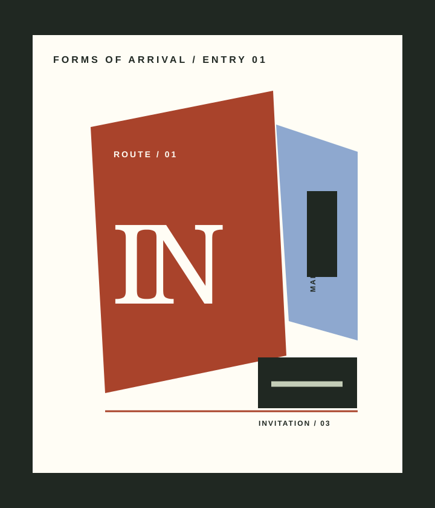

01 / ROUTE
Public architecture exhibition / 2026–27
Every city starts with a way in.
Forms of Arrival follows the routes, thresholds, and small public signals that make a place legible before a wall becomes familiar.
Plan your arrival
Architecture begins before the door.
The exhibition treats an entry as a civic promise: a sequence of directions, surfaces, and invitations that helps a stranger become a participant.
Three public signals.
Route / marker / invitation
02 / MARKER
A threshold sign that lets the building speak first.
03 / INVITATION
A return cue that stays with you after the room.
Arrive with a place in mind.
01Gallery 04
Jalan Cikini Raya 73, Jakarta
0214 Sep — 18 Jan
Tuesday–Sunday, 10.00–20.00
03Daily route talk
17.00 / limited to 30 visitors
04Admission
Reserve a timed entry before arrival
Enter with a question.
Forms of Arrival / Gallery 04 / 14 Sep — 18 Jan